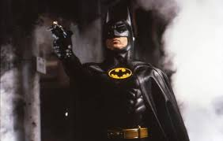
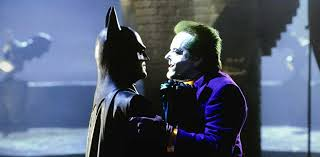
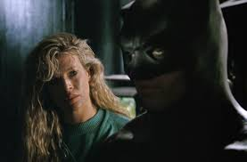
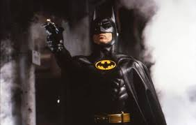
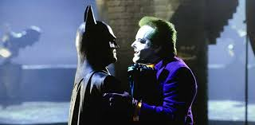
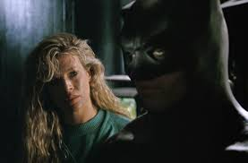
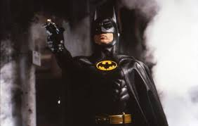
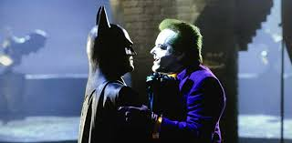
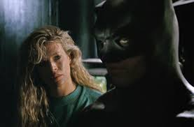

У Брюса Вейна (Майкла Кітона) в дитячому віці, на очах, злочинці вбили батьків, за що хлопець клянеться помститися. Як прикриття у своїй вічній боротьбі зі злом та зі злочинцями він використовує костюм кажана і, відповідно, псевдонім «Бетмен» (англ. Batman).
Уже роками Ґотем контролює кримінальний бос Карл Ґріссом (Джек Паланс), незважаючи на всі зусилля новообраного окружного прокурора Гарві Дента (Біллі Ді Вільямс) і комісара поліції Джеймса Гордона (Пет Гінгл). Доповідач Александер Нокс (Роберт Вул) і фото-журналістка Вікі Вейл (Кім Бейсінгер) починають власне журналістське розслідування про кажана, який наводив страх на злочинців, — проте якого вважали і найпершим злочинцем.
Вікі і Александер були присутні на прийомі у Брюса Вейна, на якому Вікі почала симпатизувати Брюсу. Тієї ж ночі Джек Нап'е (Джек Ніколсон), права рука Карла Ґріссома, відправляється в рейд на хімічний завод. Після того, як поліція прибула щоб заарештувати його, він розуміє — Ґріссом його зрадив. На завод також прибув Бетмен, у якого Джек вистрілив, але куля відбилася від його рукавички і попала в обличчя Джеку. Оговтавшись від болю він через передрягу потрапляє в бочку з невідомим хімічним розчином: він виживає, тільки його волосся і шкіра втратили колір. Після невдалої хірургічної спроби відновити собі обличчя, він стає схожий на клоуна і починає називати себе «Джокером».



Після вбивства Ґріссома, Джокер бере на себе його імперію і продовжує тримає місто в його владі. Джокер хоче розсмішити місто до смерті, використовуючи хімічні елементи. Бетмен спробував вистежити Джокера і з'ясувалось: він був тим молодим злочинцем, який убив батьків Брюса. Бетмен знищує завод Джокера, що використовується для виробництва отруйних продуктів. Проте Джокер не заспокоюється і проводить Ґотем-парад, залучаючи громадян на вулиці, видаючи їм гроші, щоб отруїти їх смертельним газом. Бетмен руйнує план, але Джокер викрадає Вікі і затягує її на дзвіницю. Після бою з Бетменом, Джокер помирає від шуму дзвіниці. Комісар Гордон відкриває Бет-сигнал разом з запискою, в якій Бетмен обіцяє захистити Ґотем, якщо злочинці знову вийдуть на вулиці.